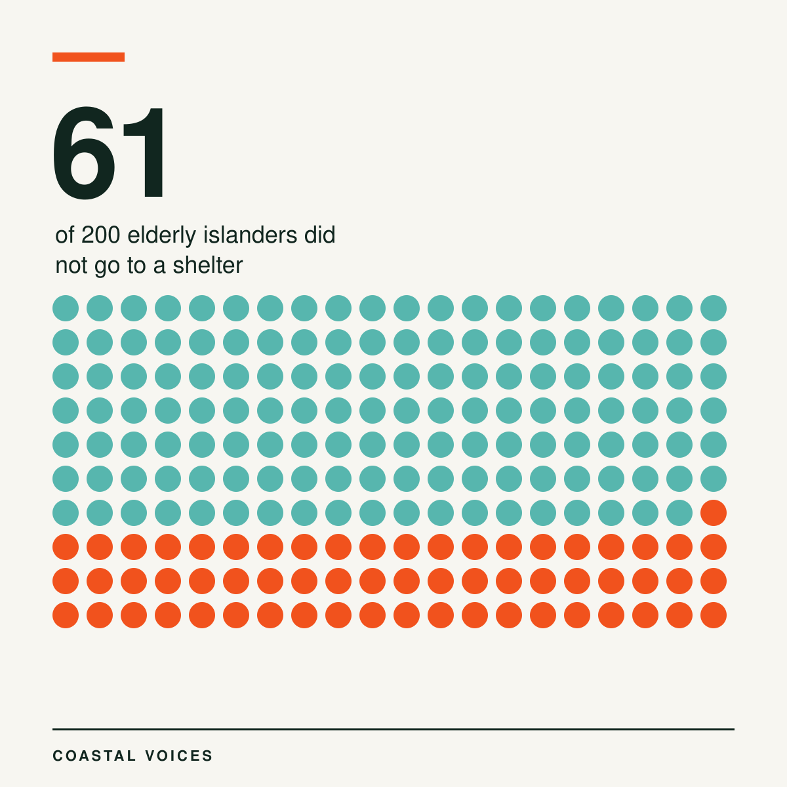
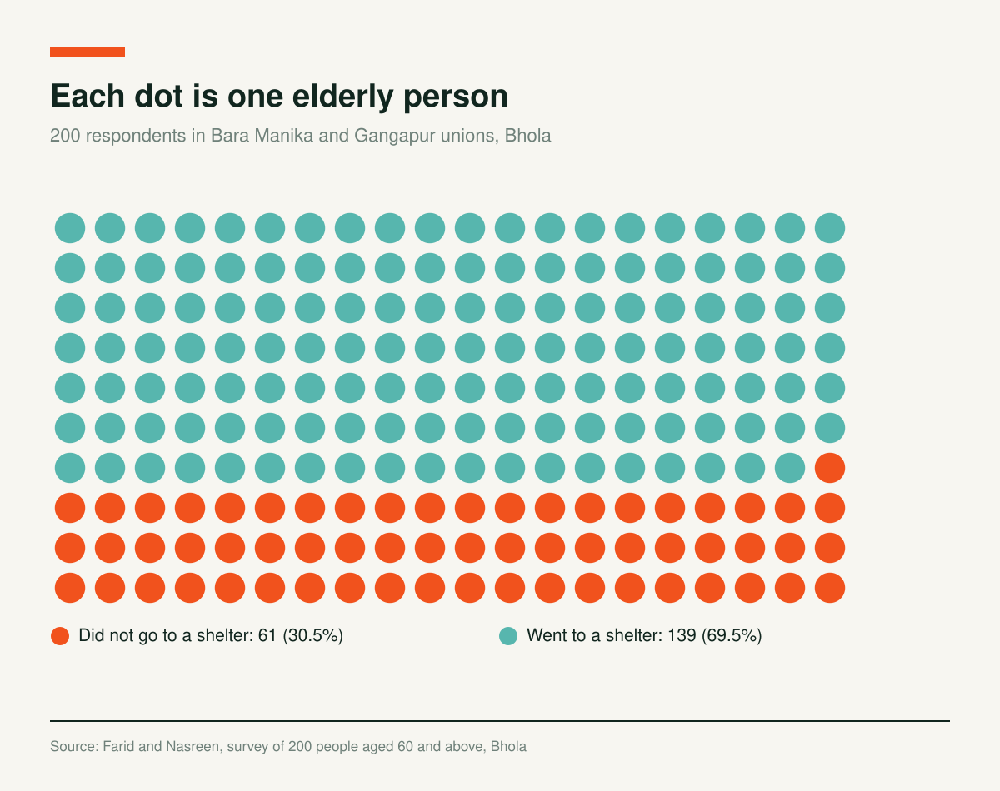
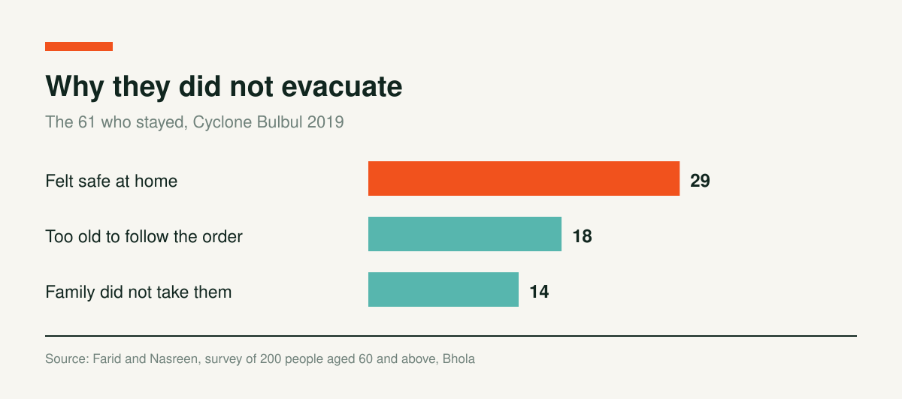

Why 61 Elderly Islanders in Bhola Stayed Home During Cyclone Bulbul

Cyclone Bulbul made landfall in November 2019, in West Bengal and Bangladesh. It killed 24 people in Bangladesh. Officials moved about 2.1 million people to cyclone shelters, one of the largest evacuations in the country's history. More than 30 million coastal residents were not evacuated.
Some of those who stayed were old. Zawad Ibn Farid and Mahbuba Nasreen went to Bhola, Bangladesh's only island district, to ask why. They surveyed 200 people aged 60 and above in two exposed unions of Borhanuddin Upazila: Bara Manika and Gangapur.

Who Stayed, and Why
Of the 200, 139 went to a shelter (69.5%). Sixty one did not (30.5%).

Among those 61, the most common reason was feeling safe at home: 29 people, or 47.5%. Another 18 (29.5%) said their age made it impossible to follow the order. Fourteen (23%) said their family did not take them.

They Knew the Risk. Many Never Heard the Order.
The elderly islanders did not underestimate the danger. A total of 57.5% rated the risk where they live as severe and 35% as major. Yet 32.5% did not know whether an evacuation order had been issued during Bulbul, and 6% said none was. Only 61.5% said an order was issued.
The survey also scored attitudes on a five point scale. The statement that old people find it very difficult to follow an evacuation order because of their age scored 4.50. The fear that an empty house would be robbed scored 4.44.
Women and men answered differently. Female respondents showed a higher level of non compliance across three groups of factors: cyclone shelters, warning messages and perceptions of evacuation. The gaps were statistically significant, below 0.01 for warnings and perceptions and below 0.05 for shelters. The authors name older women as the more susceptible group.
What They Asked For
Asked for recommendations, 25.9% of the answers called for more cyclone shelters in risk prone areas and 25.88% for cyclone resistant community homes. Another 22.35% asked for special attention to older people during evacuation. Others wanted elderly friendly shelters, awareness campaigns and evacuation training.